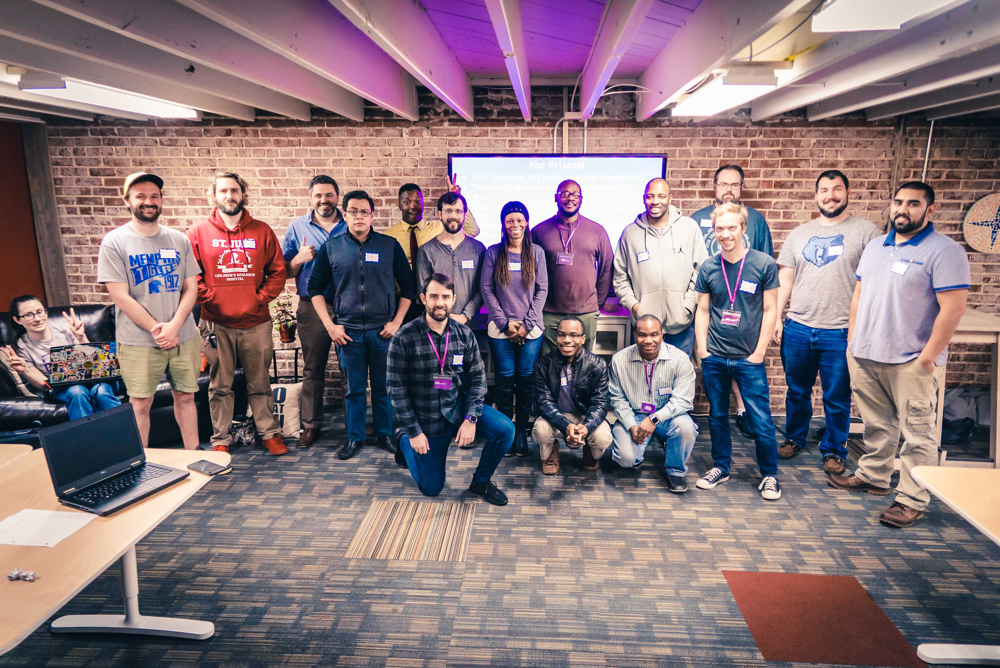

Well, when I first signed up for LaunchCode, I did not think I was going to get in. But I decided to go ahead and fill out the application. The process was simple enough and the opening exam was a bit tough, but it was fun. I've always had a strong interest in the tech sector, especially growing up in this day an age.
And tech is continously improving! We've gone past what we assumed was possible and have developed technologies that used to be featured on science fiction shows! But, everyone has to start somewhere. The class has been amazing, to say the least. When I came in my first day, I wasn't sure what to expect. But the welcome was friendly. Everyone in LaunchCode wants everyone else to succeed. And the community is always accessible to help. There's Slack channels, there's meet ups; It's rare to be left out on your own to figure something out.
After a while, one of our amazing TA's here decided to host his own lecture on HTML and CSS. It really helped to make concepts more clear. The Code Connective crew makes awesome meetings happen at least once a month where you can learn a lot! At the last one, we were shown a couple of Python tricks and met devs working in their fields that started out much like all of us in this class. With a computer and a course.
I'm definitely looking forward to developing my skills more with LaunchCode!